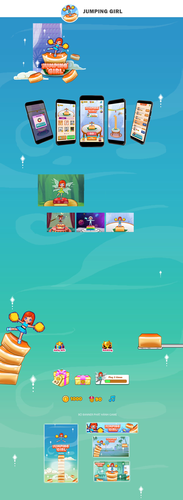

Năm sản xuất: 2020
Thể loại: Hyper casual
Nền tảng: Facebook
Lượt active hiện tại: 5k active (Thống kê hiển thị trên fb)
Bản thân phụ trách toàn bộ concept, Ui/Ux, animation cho game trong 4 năm đầu phát triển và vận hành (đến nay chưa thấy có vận hành mới). Đây là game duy nhất điều khiển character ở Hayhay. Mình đã nghĩ đến rất nhiều art style, tuy nhiên lựa chọn style này lại là quyết định của màn hình điện thoại.
Điều mình thích nhất và quyết định đưa game này vào profile là vì: mình được tạo human character, cùng các bộ skin của nó. Ngoài ra, bộ effect và animation trong game cũng là điều bản thân cảm thấy ưng ý. Vì một mình làm toàn bộ phần visual cho game, mình ko có nhiều thơn gian để demo, chủ yếu là tạo animation rồi trao đổi trực tiếp với code để game ra đúng ý tưởng.